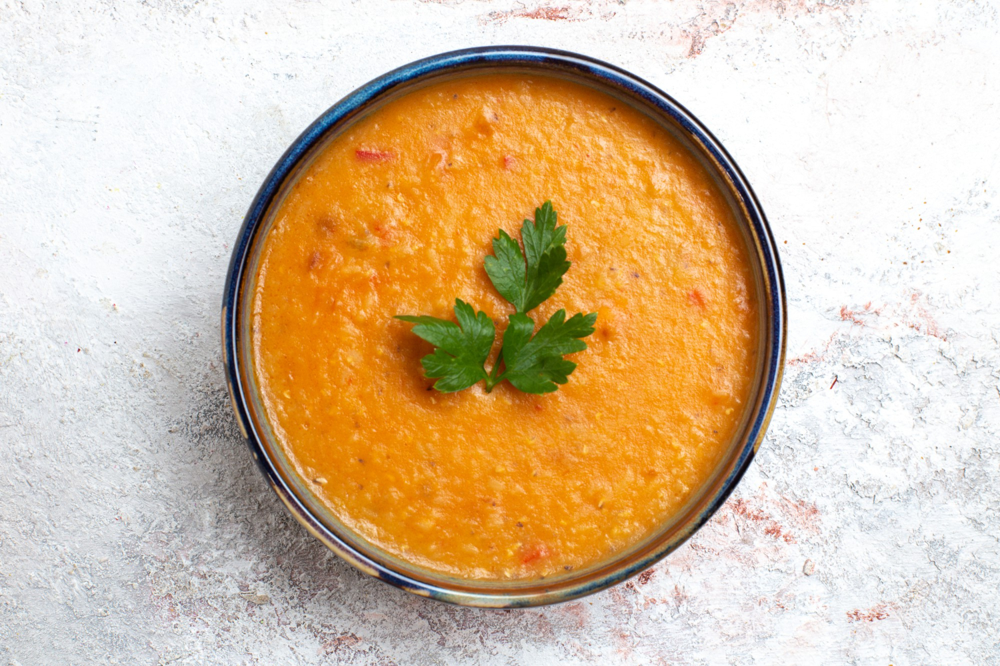

Dal

Description:
Dal is a staple dish in Indian cuisine, known for its comforting and nutritious qualities. Made from lentils, this dish is seasoned with a blend of spices that create a flavorful and aromatic experience. Dal can be served with rice, roti, or naan, making it a versatile and satisfying meal for any occasion.
This dal recipe features yellow split lentils (toor dal), cooked until soft and then tempered with a fragrant mixture of onions, tomatoes, garlic, and a variety of spices. The result is a hearty and delicious dish that's perfect for both vegetarians and non-vegetarians alike.
Ingredients:
- 1 cup toor dal (yellow split pigeon peas)
- 3 cups water
- 1/2 teaspoon turmeric powder
- 1 teaspoon salt
- 2 tablespoons ghee or oil
- 1 teaspoon cumin seeds
- 1 onion, finely chopped
- 2 tomatoes, chopped
- 3 cloves garlic, minced
- 1 inch ginger, minced
- 2 green chilies, slit
- 1/2 teaspoon red chili powder
- 1/2 teaspoon garam masala
- 1/2 teaspoon ground coriander
- 1/4 teaspoon asafoetida (hing)
- 1/2 teaspoon mustard seeds
- 1/2 teaspoon fenugreek seeds
- 1 sprig curry leaves
- 2 tablespoons chopped fresh cilantro (coriander leaves)
- Juice of half a lemon
Steps:
- Rinse and cook the dal: Rinse the toor dal under cold water until the water runs clear. In a large pot, combine the dal, 3 cups of water, turmeric powder, and salt. Bring to a boil, then reduce the heat and simmer until the dal is soft and fully cooked, about 30 minutes. Use a spoon to mash some of the cooked dal to thicken the consistency.
- Prepare the tempering: In a separate pan, heat the ghee or oil over medium heat. Add the cumin seeds and mustard seeds, and cook until they begin to splutter. Add the fenugreek seeds and asafoetida, and sauté for a few seconds.
- Add aromatics: Add the chopped onion, and sauté until it turns golden brown. Then add the minced garlic, ginger, and green chilies. Cook for a couple of minutes until fragrant.
- Cook tomatoes and spices: Add the chopped tomatoes to the pan and cook until they become soft and the oil starts to separate. Stir in the red chili powder, garam masala, and ground coriander. Cook for another 2-3 minutes.
- Combine and simmer: Pour the tempering mixture into the cooked dal. Mix well and let it simmer for another 10 minutes to allow the flavors to meld together. Adjust the salt to taste.
- Finish the dish: Stir in the chopped cilantro and lemon juice. Remove from heat.
- Serve: Serve the dal hot, garnished with additional cilantro if desired. Enjoy it with steamed rice, roti, or naan for a complete and satisfying meal.
Back to Homepage